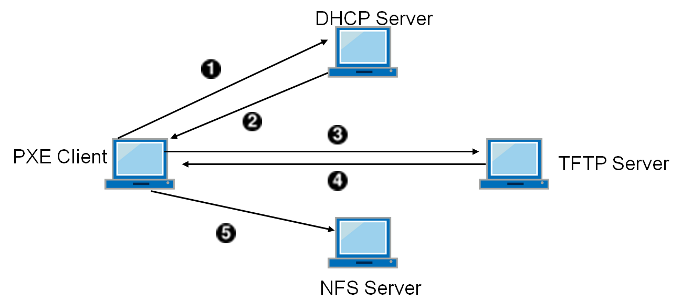

Het Preboot eXecution Environment (PXE) van Intel® maakt het mogelijk om het besturingssysteem over het netwerk op te starten. Ondersteuning voor PXE wordt normaliter aangeboden in het BIOS van moderne moederborden, waar het kan worden aangezet in de instellingen van het BIOS wat opstarten over het netwerk mogelijk maakt. Een volledig werkende PXE-opstelling vereist ook correct geconfigureerde DHCP- en TFTP-servers.
Wanneer de gastheercomputer opstart, krijgt het informatie over
DHCP over waar de intiële bootloader staat via
TFTP. Nadat de gastheercomputer deze informatie heeft ontvangen,
downloadt het de bootloader via TFTP en voert
het vervolgens de bootloader uit. Dit is gedocumenteerd in sectie 2.2.1
van de Preboot
Execution Environment (PXE) Specification. In FreeBSD is de
bootloader die tijdens het PXE-proces wordt opgehaald
/boot/pxeboot. Terwijl
/boot/pxeboot wordt uitgevoerd, wordt de kernel van
FreeBSD geladen en wordt er verder gegaan met de rest van de opstartprocedure
van FreeBSD. Kijk voor meer informatie over het opstartproces van FreeBSD in
Hoofdstuk 13, Het FreeBSD opstartproces.
Kies een map uit voor een installatie van FreeBSD die over NFS aangekoppeld kan worden. Bijvoorbeeld een map als
/b/tftpboot/FreeBSD/install.#export NFSROOTDIR=/b/tftpboot/FreeBSD/install#mkdir -p ${NFSROOTDIR}Stel de NFS-server in door de instructies in Paragraaf 29.3.2, “NFS instellen” op te volgen.
Exporteer de map via NFS door het volgende aan
/etc/exportstoe te voegen:/b -ro -alldirs
Herstart de NFS-server:
#service nfsd restartStel inetd(8) in door de stappen zoals in Paragraaf 29.2.2, “Instellingen” beschreven op te volgen.
Voeg de volgende regel toe aan
/etc/inetd.conf:tftp dgram udp wait root /usr/libexec/tftpd tftpd -l -s /b/tftpboot
Herstart inetd:
#service inetd restartHerbouw de kernel en userland van FreeBSD:
#cd /usr/src#make buildworld#make buildkernelInstalleer FreeBSD in de map die over NFS is aangekoppeld:
#make installworld DESTDIR=${NFSROOTDIR}#make installkernel DESTDIR=${NFSROOTDIR}#make distribution DESTDIR=${NFSROOTDIR}Test dat de TFTP-server werkt en dat het de bootloader dat via PXE verkregen zal worden kan downloaden:
#tftp localhosttftp>get FreeBSD/install/boot/pxebootReceived 264951 bytes in 0.1 secondsVoeg een regel aan
${NFSROOTDIR}/etc/fstabtoe om het root-bestandssysteem over NFS aan te koppelen:# Device Mountpoint FSType Options Dump Pass mijnhost.example.com:/b/tftpboot/FreeBSD/install / nfs ro 0 0
Vervang
mijnhost.example.comdoor de hostnaam of het IP-adres van uw NFS-server. In dit voorbeeld wordt het root-bestandssysteem als alleen-lezen aangekoppeld om te voorkomen dat NFS-cliënten per ongeluk de inhoud van het root-bestandssysteem wissen.Stel het root-wachtwoord in voor de chroot(8)-omgeving.
#chroot ${NFSROOTDIR}#passwdDit stelt het root-wachtwoord in voor cliëntmachines die over PXE opstarten.
Maak root-logins over SSH mogelijk voor cliëntmachines die met PXE opstarten door
${NFSROOTDIR}/etc/ssh/sshd_configte bewerken en de optiePermitRootLoginaan te zetten. Dit is gedocumenteerd in sshd_config(5).Pas andere wijzigingen toe aan de chroot(8)-omgeving in ${NFSROOTDIR}. Deze wijzigingen zouden het toevoegen van pakketten met pkg_add(1), het bewerken van het wachtwoordbestand met vipw(8) of het bewerken van amd.conf(5)-projecties voor automatisch aankoppelen kunnen zijn. Bijvoorbeeld:
#chroot ${NFSROOTDIR}#pkg_add -r bash
Als u vanaf een NFS-rootvolume opstart, detecteert
/etc/rc dat u over NFS opstartte en draait het het
script /etc/rc.initdiskless. Lees het commentaar
in dit script om te begrijpen wat er gebeurt. Het is nodig om
/etc en /var geheugen-backed
te maken omdat deze mappen schrijfbaar moeten zijn, maar de NFS-rootmap
is alleen-lezen.
#chroot ${NFSROOTDIR}#mkdir -p conf/base#tar -c -v -f conf/base/etc.cpio.gz --format cpio --gzip etc#tar -c -v -f conf/base/var.cpio.gz --format cpio --gzip var
Wanneer het systeem opstart, zullen er geheugen-bestandssystemen
voor /etc en /var worden aangemaakt en aangekoppeld,
en zal de inhoud van de cpio.gz-bestanden er
naartoe worden gekopieerd.
PXE heeft een geprepareerde TFTP-server en DHCP-server nodig. De DHCP-server hoeft niet per së dezelfde machine te zijn als de TFTP-server, maar het dient bereikbaar te zijn in uw netwerk.
Installeer de DHCP-server door de instructies op te volgen zoals beschreven in Paragraaf 29.5.7, “Een DHCP-server installeren en instellen”. Zorg ervoor dat
/etc/rc.confen/usr/local/etc/dhcpd.confcorrect zijn geconfigureerd.Stel in
/usr/local/etc/dhcpd.confnext-server,filenameenoption root-pathin om het IP-adres van uw TFTP-server, het pad naar/boot/pxebooten het pad naar het NFS-root-bestandssysteem op te geven. Hier is een voorbeeld van de instellingen voordhcpd.conf:subnet 192.168.0.0 netmask 255.255.255.0 { range 192.168.0.2 192.168.0.3 ; option subnet-mask 255.255.255.0 ; option routers 192.168.0.1 ; option broadcast-address 192.168.0.255 ; option domain-name-server 192.168.35.35, 192.168.35.36 ; option domain-name "example.com"; # IP-adres van TFTP server next-server 192.168.0.1 ; # pad van bootloader verkregen via TFTP filename "FreeBSD/install/boot/pxeboot" ; # pxeboot bootloader zal proberen om deze map te NFS-mounten voor root-FS option root-path "192.168.0.1:/b/tftpboot/FreeBSD/install/" ; }
Ga naar het BIOS-configuratiemenu wanneer de cliëntmachine opstart. Stel het BIOS zo in dat het van het netwerk opstart. Indien alle vorige configuratiestappen correct zijn, zou alles "gewoon" moeten werken.
Gebruik de poort net/wireshark om netwerkverkeer met betrekking tot het PXE-opstartproces te debuggen, wat geïllustreerd is in onderstaand diagram. In Paragraaf 31.8.3, “Een DHCP-server prepareren” is een voorbeeldconfiguratie gegeven waarbij de DHCP-, TFTP- en NFS-servers op dezelfde machine staan. Deze servers kunnen echter op verschillende machines staan.
Afbeelding 31.1. PXE-opstartproces met NFS-root-mount
Cliënt zendt DHCPDISCOVER uit.

DHCP-server antwoordt met IP-adres,
next-server,filenameenroot-path.
Cliënt verstuurt TFTP-verzoek naar
next-serveromfilenameop te vragen.
TFTP-server antwoordt en verstuurt
filenamenaar cliënt.
Cliënt voert
filenameuit welke pxeboot(8) is. pxeboot(8) laadt de kernel. Wanneer de kernel draait, wordt het root-bestandssysteem gespecificeerd doorroot-pathover NFS aangekoppeld.Controleer dat het bestand
pxebootvia TFTP kan worden verkregen. Kijk op uw TFTP-server in/var/log/xferlogom er zeker van de zijn dat het bestandpxebootvan de juiste locatie is opgehaald. Om de configuratie met bovenstaandedhcpd.confte testen:#tftp 192.168.0.1tftp>get FreeBSD/install/boot/pxebootReceived 264951 bytes in 0.1 secondsLees tftpd(8) en tftp(1). De
BUGSsecties in deze pagina's documenteren enkele beperkingen van TFTP.Controleer dat het root-bestandssysteem via NFS kan worden aangekoppeld. Om de configuratie met bovenstaande
dhcpd.confte testen:#mount -t nfs 192.168.0.1:/b/tftpboot/FreeBSD/install /mntLees de code in
src/sys/boot/i386/libi386/pxe.com te begrijpen hoe depxeboot-lader variabelen alsboot.nfsroot.serverenboot.nfsroot.pathinstelt. Deze variabelen worden vervolgens gebruikt in de root-aankoppelcode voor diskvrij NFS insrc/sys/nfsclient/nfs_diskless.c.Lees pxeboot(8) en loader(8).